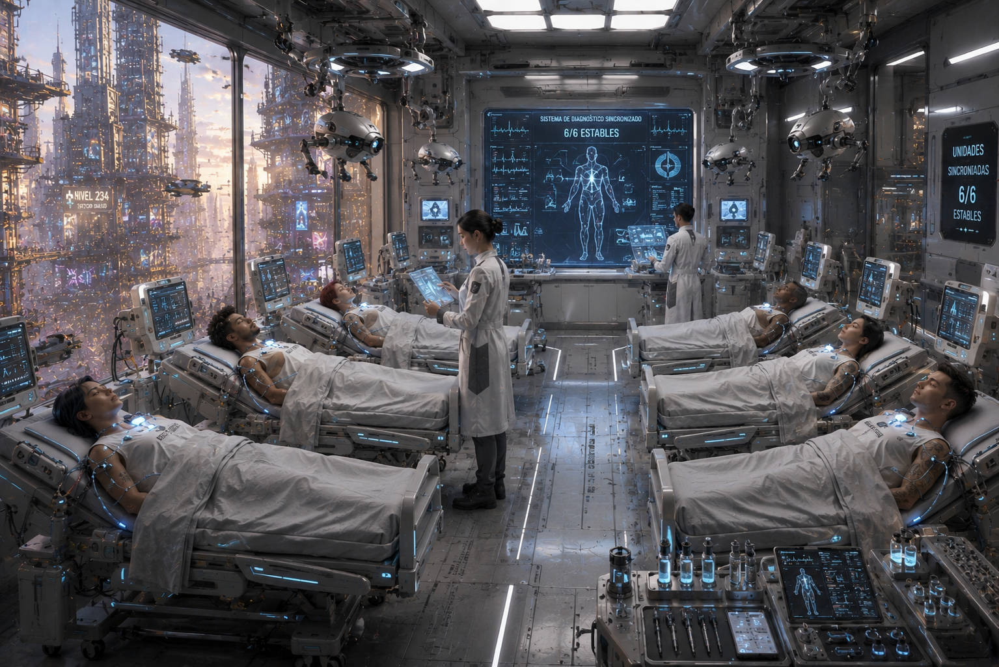

MÓDULO — Garantía anulada
Colección de one-shots de MadCity — episodio 2 de 6. Estado: BORRADOR, pendiente de playtest.
«Tu cuerpo es único. Por eso la garantía excluye sus particularidades.»

La sala de revisión, justo antes de que los seis pacientes empiecen a repetir lo mismo a la vez.
Resumen operativo — léelo antes de dirigir
Premisa: seis pacientes convocados para una revisión rutinaria de implantes en la Clínica Ibis-Forge Capricornio empiezan, de forma sincronizada, a reproducir fragmentos del mismo recuerdo sensorial ajeno — diecinueve segundos de pánico, oscuridad y metal cerrándose. No comparten alma ni forman una colmena: un búfer diagnóstico mal borrado está filtrando el recuerdo real de una técnica de mantenimiento, Ness Ilium, atrapada desde hace horas en un conducto detrás de la propia sala de revisión. El protocolo automático de la clínica va a purgar esos búferes y sellar el sector para proteger a los pacientes — borrando también la mejor pista para encontrarla con vida.
Duración: una sesión de 4-6 horas. Cinco escenas, escala local: una clínica, seis pacientes, una técnica atrapada y una subcontrata que prefiere que esto no se sepa.
Qué saben los PJ: que hay una revisión de implantes en marcha en Ibis-Forge Capricornio y que algo ha ido mal — pacientes gritando lo mismo a la vez, personal nervioso, la clínica bloqueando salidas "por protocolo".
Verdad del Narrador: no es un alma, no es una IA, no es Deriva. Es un fallo de higiene de datos sobre un accidente real y en curso. Ibis-Forge local no ordenó el fraude, pero puede preferir contener el escándalo antes de entenderlo del todo.
Objetivo inmediato: encontrar y rescatar a Ness antes de que el protocolo automático purgue los búferes y selle el conducto — a la vez que se calma a seis pacientes asustados y se decide qué hacer con la responsabilidad de la subcontrata.
Pregunta de fondo: ¿qué le debe una clínica de garantía real a un paciente cuando el fallo no es del implante, sino de quien debía protegerlo?
Si nadie interviene: el protocolo purga los búferes y sella el sector a su hora. Los pacientes quedan estabilizados pero sin respuesta. Ness sigue atrapada, sin nadie que la busque, hasta que una inspección rutinaria posterior la encuentre — demasiado tarde para que importe como rescate.
Desarrollo en cinco escenas
- La revisión — vida cotidiana de clínica y primera reproducción sincronizada.
- Cierre sanitario — puertas bloqueadas, versiones enfrentadas, pacientes asustados.
- Diecinueve segundos — reconstruir el recuerdo para localizar a Ness.
- El espacio detrás de la pared — acceso al conducto, rescate, resistencia del protocolo automático.
- La garantía — salvar pacientes, decidir responsabilidades, acordar qué se hace público.
Panel del Narrador — léelo antes de sentarte a la mesa
Reloj — tres horas hasta la purga de emergencia:
| Tiempo | Qué ocurre |
|---|---|
| H+0:00 | Primera reproducción sincronizada. Escena 1 empieza aquí. |
| H+0:20 | La clínica activa el cierre sanitario: puertas bloqueadas, drones clínicos patrullando (Escena 2). |
| H+1:00 | Uno de los seis pacientes —el más frágil, con un implante cardíaco de mantenimiento atrasado— necesita atención médica real antes de que termine la hora siguiente, o su estado empeora. |
| H+2:00 | El protocolo empieza a purgar búferes secundarios; cada purga borra una vía de investigación si no se usó antes. |
| H+2:40 | Últimos minutos antes del sellado; el conducto de mantenimiento se vuelve mucho más peligroso de forzar a partir de aquí. |
| H+3:00 | Purga completa y sellado del sector. Si Ness sigue dentro, la escena 4 se juega contra el sistema automático, no solo contra el tiempo. |
Cómo avanza el tiempo de ficción: no lo simules minuto a minuto — avanza el reloj cuando los PJ cambien de zona de la clínica, investiguen a fondo o esperen una respuesta.
- Calmar a un paciente, hacer una pregunta rápida: 5-10 min.
- Moverse entre zonas de la clínica (recepción, sala de revisión, despacho de Lian, acceso al conducto): 5-10 min.
- Reconstruir el recuerdo con equipo médico (Escena 3): 20-30 min, una sola vez por método distinto.
- Forzar o negociar el acceso al conducto: 10-20 min según el método.
- Cada intento fallido de acceder al conducto sellado: cuesta 15 min y puede alertar al protocolo automático.
Las tres partes, en una frase:
- Doctora Lian Orbe → salvar a los pacientes y a Ness sin que una negligencia local destruya la confianza en el centro.
- Dorio Vance (subcontrata) → que nadie relacione el búfer defectuoso con su empresa antes de poder arreglarlo en silencio.
- Juno Arca / seguridad → que el "incidente clínico" no se convierta en un problema de orden público en Capricornio.
No hay villano. Dorio no quiso que nadie se hiciera daño: reutilizó búferes para ahorrar costes de un lote defectuoso, no para ocultar un crimen. Lian no sabía nada. El protocolo automático no es malicioso, solo rígido. La violencia no tiene sitio natural en este módulo — si aparece, es un síntoma de que algo se ha gestionado muy mal.
Ness Ilium, en mesa: consciente pero débil, con el aire cada vez más denso en el conducto. No puede moverse con normalidad (una pierna atrapada bajo un panel desprendido). Prioriza mantener la calma y guiar por voz a quien la encuentre — no es un cadáver que rescatar sin diálogo, es una persona real con miedo y sentido del humor negro de quien lleva horas sola.
Textura de clínica (1d6, para ambientar sin planificar): úsala dos o tres veces entre las Escenas 1 y 2, no en cada turno.
| d6 | Momento |
|---|---|
| 1 | Un paciente pregunta, muy tranquilo, si esto entra dentro de la garantía extendida. |
| 2 | Un dron clínico ofrece agua a todo el que pasa cerca, incluida la persona equivocada. |
| 3 | Un sanitario intenta rellenar un formulario de incidencia mientras todo el mundo grita a su alrededor. |
| 4 | Una pantalla de la sala de espera sigue reproduciendo el anuncio de la clínica de fondo, ajena al caos. |
| 5 | Alguien confunde a un PJ con personal médico y le pide ayuda directamente. |
| 6 | Un paciente, el más tranquilo de los seis, empieza a describir el recuerdo con demasiada precisión — asustando a los demás. |
Textura opcional adicional, sin tirada: dos sanitarios comentan, entre turno y turno, "la locura del Glass-Dog en la Plaza del Primer Vuelo" de hace unos días — nadie aquí sabe más que el rumor.
Lo que ocurrió realmente
Verdad completa
Dorio Vance dirige una pequeña subcontrata que suministra a Ibis-Forge Capricornio componentes de diagnóstico reacondicionados. Para ahorrar costes tras recibir un lote defectuoso, ordenó reutilizar búferes diagnósticos sin borrarlos correctamente en vez de sustituirlos como marca el procedimiento — un atajo que llevaba meses funcionando sin que nadie lo notara.
Ness Ilium, técnica de mantenimiento del edificio, sufrió un accidente hace unas horas en un conducto detrás de la sala de revisión: un panel se desprendió y la dejó atrapada, consciente pero sin poder salir ni comunicarse por los canales normales. Su terror y su memoria sensorial de esos primeros diecinueve segundos —oscuridad, metal cerrándose, el propio nombre gritado sin respuesta— quedaron grabados sin querer en uno de los búferes reutilizados, y desde ahí se han filtrado, sincronizados, a los seis pacientes conectados hoy para su revisión.
La dirección local de Ibis-Forge (Lian) no ordenó nada de esto y no lo sabía. El protocolo automático de la clínica, diseñado para proteger a los pacientes de cualquier filtración de datos sensibles, va a purgar los búferes contaminados y sellar el sector — un procedimiento correcto en su lógica, que en este caso concreto borra también la pista y el acceso a Ness.
Qué saben los PJ y qué no
Pueden llegar a saber todo lo anterior investigando. Lo que no deben poder resolver desde el principio es si el recuerdo compartido es un fenómeno de Deriva, un alma atrapada o algo más raro — eso se aclara en la Escena 3, no antes.
Tono
Tensión médica real, sin villano que castigar. Dorio debe dar miedo por lo que puede perder (su empresa, su reputación, quizás su libertad) sin ser cruel. Lian debe resultar competente y humana, no una burócrata fría. El rescate de Ness tiene peso emocional concreto: es una persona con nombre y voz, no un objetivo de misión.
Reparto y relaciones
Doctora Lian Orbe — responsable clínica
Aspecto: bata impecable incluso en mitad del caos, manos firmes, habla con el lenguaje corporativo perfecto justo hasta que algo la sorprende de verdad — entonces se le nota el acento de origen.
PNJ interpretable (5-6 profesiones), compartida con el resto de la colección. Excelente médica que domina demasiado bien el lenguaje corporativo.
F20/A35/P55/V50 | PV 12/12/12 | Bld 0 | Medicina 75% | Liderazgo/Gestión clínica 55% | Social 50%
- Quiere salvar a los pacientes y a Ness, y evitar que esto destruya la confianza en el centro.
- Respeta evidencia clínica y discreción que no ponga vidas en riesgo.
- Falla previsible: intenta ganar tiempo antes de reconocer públicamente un error institucional — puede ocultar información a los PJ por instinto corporativo, no por mala fe.
- Sin PJ: sigue el protocolo automático a rajatabla, prioriza a los pacientes visibles sobre la búsqueda de Ness.
Dorio Vance — representante de la subcontrata
Aspecto: traje de reunión un poco arrugado por las horas, carpeta que no suelta, sonrisa profesional que tarda cada vez más en volver a su sitio.
PNJ interpretable (3-4 profesiones). Reutilizó los búferes para ahorrar costes de un lote defectuoso — un atajo, no un plan criminal.
F20/A25/P40/V35 | PV 11/11/11 | Bld 0 | Social/Negociación 50% | Tecnología (diagnóstico) 45%
- Quiere que nadie relacione el fallo con su empresa antes de poder arreglarlo en silencio.
- No pondrá en peligro deliberado a nadie — está aterrado por las consecuencias, no dispuesto a agravarlas.
- Sin PJ: intenta convencer a Lian de que el fallo es "un problema de calibración", ganando tiempo para el protocolo automático.
Ness Ilium — técnica de mantenimiento atrapada
Aspecto (solo se ve al llegar a la Escena 4): mono de trabajo sucio de grasa, una pierna inmovilizada bajo un panel desprendido, voz ronca de llevar horas gritando y ya sin fuerzas para ello — pero todavía con ganas de hacer un chiste malo sobre su suerte.
PNJ funcional (2 profesiones), sin ficha de combate relevante. Mecánica/Mantenimiento 60%.
- Quiere salir con vida y que alguien revise de una vez los paneles del conducto, porque "esto iba a pasar tarde o temprano".
- No culpa a Ibis-Forge directamente — culpa al procedimiento barato que nadie quiso pagar.
Enfermero Tavo Reiss y enfermera Prisca Doune — personal sanitario
PNJ funcionales (1-2 profesiones cada uno). Asustados pero profesionales; siguen a Lian sin cuestionarla en público, aunque en privado dudan de si el protocolo automático es lo correcto aquí.
Medicina 40% cada uno | sin ficha de combate.
Los seis pacientes
Tres con nombre y necesidad concreta, tres como grupo funcional — para que ningún paciente sea solo un contador de daño:
- Sorel Kade, el más frágil: implante cardíaco de mantenimiento atrasado. Necesita atención real antes de H+1:00 o su estado empeora (ver Reloj). Tranquilo hasta que algo lo asusta de verdad.
- Yannis Prado, el más asustado: no para de repetir en voz alta fragmentos del recuerdo ("¡el metal se está cerrando!") — molesto para los demás, pero es quien mejor puede ayudar a reconstruirlo si se calma.
- Doña Elka Sorm, la más veterana: ya ha pasado por revisiones raras antes y no se altera fácil — puede calmar al resto si alguien se lo pide.
- Otros tres pacientes: grupo funcional, reaccionan como cabría esperar (miedo, indignación, curiosidad), sin necesidad de ficha propia.
Dos drones clínicos
Sistemas automáticos que aplican el protocolo sin malicia: Detección 50%, pueden bloquear puertas, aplicar sedación leve no letal a quien consideren un riesgo médico, y advertir antes de actuar. No combaten salvo que se les ataque directamente.
Juno Arca — seguridad exterior
Aspecto: ya descrita en la colección — correcta, cansada, uniforme impecable. Aquí cubre el perímetro exterior de la clínica, no entra salvo que se lo pidan o la situación se salga de control.
Ficha compartida (ver El Glass-Dog que nadie vio o cualquier módulo de la colección): F35/A35/P45/V45 | PV 17/17/17 | Bld 2 | Armas cortas 50% (no letal) | Daño 5 | Liderazgo/Mando 45%.
- Quiere que el incidente no se convierta en un problema de orden público en Capricornio.
- Respeta a Lian profesionalmente; duda de Dorio en cuanto lo interroga dos minutos.
Relaciones para el Narrador
- Lian y Dorio se conocen de trabajar juntos antes; ella confía en él más de lo que debería, al principio.
- Dorio teme más perder el contrato y su empresa que ir a la cárcel — no ha entendido del todo la gravedad de lo que hizo.
- Ness no sabe nada de los pacientes ni del protocolo — solo sabe que lleva horas atrapada y que nadie ha venido.
- Juno confía en el criterio de Lian, no en el de Dorio.
- Yannis (el paciente asustado) puede convertirse, sin quererlo, en la mejor fuente de información sobre el recuerdo si alguien lo calma en vez de callarlo.
Lugares necesarios
Sala de espera y recepción: primera zona, donde empieza el cierre sanitario. Pantallas publicitarias, sillones, el ambiente corporativo habitual de Ibis-Forge.
Sala de revisión: donde ocurrió la primera reproducción sincronizada. Equipo de diagnóstico, los seis pacientes, camillas.
Despacho de Lian: zona de gestión, con acceso a los registros de la subcontrata si alguien consigue entrar.
Conducto de mantenimiento tras la sala de revisión: donde está atrapada Ness. Estrecho, mal iluminado, con el panel desprendido bloqueando parcialmente el paso.
Las cinco escenas
Cada escena está pensada para dirigirse sola, sin buscar en otra parte del documento durante el juego — las fichas relevantes están repetidas dentro.
Escena 1 — La revisión
Atmósfera:
Luz clínica, blanca y uniforme. Seis camillas, seis pacientes conectados a equipo de diagnóstico que zumba bajo. Y de golpe, los seis a la vez, la misma frase entrecortada saliendo de sus bocas: «el metal se está cerrando».
Qué está ocurriendo: la primera reproducción sincronizada acaba de ocurrir. Los pacientes, desorientados, repiten fragmentos del mismo recuerdo sensorial ajeno.
PNJ presentes, con su intención inmediata:
- Doctora Lian Orbe — llega en segundos, quiere estabilizar a los pacientes antes que entender qué ha pasado (Aspecto y ficha: ver Reparto).
- Tavo y Prisca — atienden a los pacientes uno a uno, nerviosos pero profesionales.
- Dorio Vance — presente porque estaba revisando "un tema de suministro" con Lian; palidece en cuanto oye la frase repetida, aunque no lo dice.
- Los seis pacientes, incluidos Sorel, Yannis y Elka (ver Reparto para sus rasgos concretos).
Qué saben / qué dicen: nadie sabe todavía qué ha pasado. Los pacientes solo repiten fragmentos inconexos; Lian pide calma; Dorio evita mirar a nadie a los ojos.
Obstáculos y acontecimientos: usa la Textura de clínica (1d6, arriba) una o dos veces si hace falta llenar el momento.
Tiradas posibles (ninguna obligatoria):
- Medicina (evaluar a los pacientes): éxito → confirmas que están físicamente estables, el fenómeno es neurológico/sensorial, no una crisis médica; fallo → diagnóstico ambiguo, sin datos claros todavía.
- Alerta o Social (observar a Dorio): éxito → notas que algo en su reacción no encaja con simple sorpresa; fallo → parece tan confundido como el resto.
Si los PJ no hacen nada: Lian ordena aislar a los pacientes en la sala de revisión mientras decide cómo proceder — primer paso hacia el cierre sanitario de la Escena 2.
Cómo termina: el grupo tiene una primera impresión del fenómeno y decide cómo investigarlo, mientras la clínica empieza a moverse hacia el protocolo de emergencia.
Después: cómo trataron a los pacientes aquí (con calma o con prisa) condiciona cuánto confían en el grupo en la Escena 2.
«El metal se está cerrando. El metal se está cerrando.»
Escena 2 — Cierre sanitario
Atmósfera:
Las puertas de la clínica se sellan con un chasquido suave, casi educado. En la sala de espera, alguien pregunta en voz alta si esto entra dentro de la garantía. Nadie le contesta.
Qué está ocurriendo: la clínica activa su protocolo de cierre sanitario. Puertas bloqueadas, versiones enfrentadas sobre lo ocurrido, pacientes cada vez más asustados.
PNJ presentes, con su intención inmediata:
- Lian — gestiona el cierre siguiendo el protocolo, pero empieza a dudar de que sea suficiente.
- Dos drones clínicos — patrullan la clínica, aplican el protocolo sin malicia (ficha: ver Reparto).
- Dorio — intenta convencer a Lian de que el fallo es "un problema de calibración", ganando tiempo.
- Juno Arca, en el exterior — cubre el perímetro, puede entrar si alguien la llama o si la situación se sale de control (Aspecto y ficha: ver Reparto).
Qué saben / qué dicen: el protocolo automático va a purgar los búferes contaminados en un plazo fijo (ver Reloj) — Lian lo confirma si se le pregunta directamente. Dorio, si se le presiona, empieza a dar explicaciones demasiado técnicas para ser inocentes del todo.
Tiradas posibles:
- Social o Liderazgo (calmar a los pacientes atrapados): éxito → bajan la tensión general, gana tiempo antes de que alguien entre en pánico; fallo → un paciente exige salir por la fuerza, complicando la gestión del cierre.
- Investigación o Tecnología (examinar los registros de mantenimiento de los búferes): éxito → encuentras la firma de la subcontrata de Dorio en el lote reutilizado; fallo → confirmas que hay una irregularidad, sin identificar todavía a quién señala.
- Alerta o Social (presionar a Dorio): éxito → admite, nervioso, que su empresa reutilizó componentes — sin saber todavía que hay alguien atrapado; fallo → se cierra en explicaciones técnicas y gana tiempo.
Si los PJ no hacen nada: el cierre se completa sin incidentes graves; el reloj sigue corriendo hacia la purga sin que nadie sepa todavía de Ness.
Cómo termina: el grupo tiene, con más o menos detalle, la pista de la subcontrata y sabe que hay un plazo real antes de que algo se pierda para siempre.
Después: lo que se sepa aquí sobre Dorio y los búferes condiciona cuánto material dispone el grupo para la Escena 3.
Escena 3 — Diecinueve segundos
Atmósfera:
Los mismos diecinueve segundos, una y otra vez, en la voz de seis personas distintas. Oscuridad. Metal cerrándose. Un nombre gritado sin respuesta. En algún punto de ese bucle hay una persona real, y todavía está esperando.
Qué está ocurriendo: el grupo reconstruye el recuerdo sensorial compartido para identificar de dónde viene y localizar a su origen.
PNJ presentes, con su intención inmediata:
- Yannis Prado, el paciente más asustado — si se le calma, es quien mejor recuerda los detalles, porque no ha dejado de repetirlos.
- Lian, si se le pide ayuda — presta el equipo de diagnóstico de la clínica para el análisis, ahora ya alarmada de verdad.
- Dorio, si sigue presente — puede confirmar, a regañadientes, qué búferes concretos están contaminados.
Qué saben / qué dicen: el recuerdo, bien analizado, apunta a un conducto de mantenimiento cercano a la sala de revisión — no a un fenómeno externo.
Tiradas posibles:
- Medicina o Electrónica (analizar el búfer diagnóstico directamente): éxito → identificas la ubicación aproximada del origen (el conducto tras la sala de revisión) y confirmas que la persona sigue viva a juzgar por la frescura de la señal; fallo → obtienes datos parciales, suficientes para seguir pero no para ubicar con precisión; éxito excepcional → además obtienes el nombre, Ness Ilium, de un registro de personal cruzado con el búfer.
- Investigación (método alternativo, cruzando registros de mantenimiento del edificio con el horario del accidente): mismo resultado que Medicina o Electrónica, por una vía distinta.
- Social (calmar a Yannis para que describa el recuerdo con más detalle): éxito → añade una pista sensorial concreta (el sonido de una herramienta cayendo, un número de zona pintado en la pared) que acelera cualquiera de las tiradas anteriores.
Si los PJ no hacen nada: Lian ordena analizar los búferes por su cuenta, con más lentitud — el grupo llega a la Escena 4 con menos tiempo de margen.
Cómo termina: el grupo sabe dónde está el origen del recuerdo y decide ir a comprobarlo.
Después: el nivel de detalle conseguido aquí determina si la Escena 4 empieza con ubicación exacta o con búsqueda a ciegas dentro del conducto.
Escena 4 — El espacio detrás de la pared
Atmósfera:
Un panel de acceso, medio oculto tras equipo de almacenaje. Al otro lado, oscuridad, el olor a metal caliente y, muy débil, una voz que todavía tiene fuerzas para hacer un chiste malo sobre su suerte.
Qué está ocurriendo: el grupo accede al conducto de mantenimiento donde Ness Ilium sigue atrapada, con el protocolo automático cada vez más cerca de sellarlo.
PNJ presentes, con su intención inmediata:
- Ness Ilium — atrapada, débil pero consciente; quiere salir y que alguien revise de una vez los paneles (Aspecto y ficha: ver Reparto).
- Dos drones clínicos, si el protocolo sigue activo — pueden intentar bloquear el acceso al conducto como parte del sellado, sin hostilidad pero sin ceder tampoco.
- Lian, si se le ha convencido de ayudar — puede autorizar el acceso oficialmente, evitando la resistencia de los drones.
Qué saben / qué dicen: Ness puede confirmar toda la verdad completa del accidente en cuanto puede hablar con calma — no sabía nada de los pacientes hasta que el grupo se lo cuenta.
Tiradas posibles:
- Mecánica o Fuerza (retirar el panel desprendido): éxito → liberas a Ness sin complicaciones; fallo → el esfuerzo mueve estructura inestable, un pequeño derrumbe adicional cuesta tiempo pero no gravedad; éxito excepcional → la liberas y evitas cualquier daño colateral al conducto.
- Tecnología o Social (convencer o anular a los drones clínicos si el protocolo sigue activo): éxito → los drones se retiran o aceptan la autorización; fallo → bloquean el paso hasta que alguien con autoridad clínica (Lian) intervenga.
- Medicina (estabilizar a Ness tras liberarla): éxito → sale en buen estado; fallo → necesita atención adicional en la Escena 5, sin gravedad mortal.
Si los PJ no hacen nada: el protocolo sella el conducto a su hora (ver Reloj); Ness queda atrapada hasta una inspección posterior — demasiado tarde para contar como rescate real.
Cómo termina: Ness queda liberada (con o sin complicaciones) o el sellado se completa antes de tiempo — cualquiera de los dos resultados es válido y pasa a la Escena 5.
Después: el estado de Ness y de la relación con Lian y Dorio condicionan qué desenlaces están disponibles en la Escena 5.
Escena 5 — La garantía
Atmósfera:
El cierre sanitario se levanta. Los pacientes, todavía algo aturdidos, empiezan a recibir explicaciones oficiales — o no. En algún despacho, alguien va a tener que decidir qué se hace público y qué se queda dentro de un informe interno.
Qué está ocurriendo: con la emergencia inmediata resuelta (Ness rescatada o no), toca decidir responsabilidades y qué se comunica.
PNJ presentes: Lian, Dorio, Ness (si fue rescatada), Juno si se implicó, los pacientes como público interesado.
Qué saben / qué dicen: la verdad completa puede revelarse a los pacientes, negociarse con Dorio, documentarse solo internamente, o alguna combinación — ninguna opción es automáticamente correcta.
Tiradas posibles: Social o Liderazgo para inclinar la decisión final; ninguna sustituye la decisión de la mesa.
Si los PJ no hacen nada: Lian decide por su cuenta contener el escándalo internamente, sin consecuencias claras para Dorio ni reconocimiento claro para Ness.
Cómo termina: queda decidido qué le pasa a Dorio, qué saben los pacientes, y cómo queda la relación de los PJ con Ibis-Forge Capricornio.
Después: ver Desenlaces combinables para las consecuencias a medio plazo.
Textos para leer
Primera reproducción sincronizada
Seis camillas, seis pacientes conectados a equipo de diagnóstico que zumba bajo. Y de golpe, los seis a la vez, la misma frase entrecortada: «el metal se está cerrando».
El cierre
Las puertas de la clínica se sellan con un chasquido suave, casi educado. En la sala de espera, alguien pregunta en voz alta si esto entra dentro de la garantía. Nadie le contesta.
El conducto
Un panel de acceso, medio oculto tras equipo de almacenaje. Al otro lado, oscuridad, el olor a metal caliente y, muy débil, una voz que todavía tiene fuerzas para hacer un chiste malo sobre su suerte.
Pistas e información
| Fuente | Revela | Vía alternativa |
|---|---|---|
| Evaluación médica de los pacientes (Escena 1) | El fenómeno es neurológico/sensorial, no una crisis física | Observar la reacción de Dorio |
| Registros de mantenimiento de búferes (Escena 2) | Firma de la subcontrata de Dorio en el lote reutilizado | Presionar directamente a Dorio |
| Análisis del búfer diagnóstico (Escena 3) | Ubicación aproximada del origen y nombre de Ness Ilium | Cruzar registros de mantenimiento del edificio con el horario del accidente |
| Calmar a Yannis (Escena 3) | Detalle sensorial que acelera la localización | — |
| Hablar con Ness (Escena 4) | Verdad completa del accidente | Documentación del contenedor de suministro de Dorio, si se examina con calma |
Recompensas y gastos
La misión no debe dejar a los PJ con pérdidas netas por gastos médicos o equipo dañado — cúbrelo antes de repartir nada más.
Recompensa económica: entre 200 y 400 PC por PJ, pagados por Ibis-Forge Capricornio como gesto de buena fe y contención de daños — no una recompensa oficial anunciada, sino un pago discreto gestionado por Lian.
Beneficios alternativos: acceso médico o credibilidad técnica con Ibis-Forge (no obediencia automática); contacto directo con Ness para futuros favores de mantenimiento; reputación local en Capricornio si el desenlace se hace público de forma favorable.
Textura opcional: si se pregunta por qué la clínica va con retraso en otros suministros, Lian menciona de pasada "un problema con una entrega de Norton la semana pasada que todavía no se ha aclarado del todo" — sin más detalle; no afecta a la resolución de este módulo.
Desenlaces combinables
Contención total. Lian gestiona todo internamente; Dorio recibe una sanción discreta; los pacientes reciben una explicación incompleta. Ibis-Forge protege su reputación, a costa de la confianza de quienes sospechan que no es toda la verdad.
Responsabilidad pública. Dorio enfrenta consecuencias reales (legales o contractuales); los pacientes reciben la verdad completa. Golpe reputacional para Ibis-Forge local, pero relación de confianza más sólida con quien lo vivió.
Acuerdo negociado. Dorio corrige el problema y compensa a los afectados sin escándalo público — ni impune ni destruido.
Ness sin rescatar. Si el sellado se completó antes del rescate, este desenlace se combina con cualquiera de los anteriores como nota agridulce: se la encuentra después, con vida pero con la sensación de que nadie llegó a tiempo de verdad.
Continuidad opcional
- Versión independiente: no exige haber jugado ningún otro módulo de la colección.
- Si se han jugado otros episodios: ayudar a Ibis-Forge aquí proporciona acceso médico o credibilidad técnica en otros one-shots de MadCity, no obediencia automática.
Ejemplo de puerta abierta: Lian busca una muestra o tratamiento disponible en otro mundo para un caso similar — enlace natural hacia cualquier otro DLC, sin obligar a aceptarlo.
Las Dos Voces
Voz satírica sobre una publicidad clínica:
«Tu cuerpo es único. Por eso la garantía excluye sus particularidades.»
Respuesta estoica en una placa de reparación:
«Una vida reparada no pertenece a la herramienta.»
Una intervención, no más — ni oráculo ni pista indispensable.
Límites de este módulo
- No convertir el recuerdo compartido en alma, IA o fenómeno de Deriva.
- Ibis-Forge debe conservar competencia real y posibilidad de corregir el problema — no es una corporación negligente por naturaleza.
- Los pacientes no son obstáculos ni contadores de daño: cada uno con nombre tiene una necesidad y una reacción propias.
- La verdad puede revelarse, negociarse o documentarse; ocultarla debe tener consecuencias narrativas, no solo mecánicas.
- No revelar ni insinuar el secreto de Proctor.
Resumen para dirigir
Reloj de tres horas hasta la purga de emergencia, con tiempos de desplazamiento fijados en el Panel del Narrador. Cinco escenas autosuficientes: revisión → cierre → reconstrucción del recuerdo → rescate → responsabilidad, cada una con atmósfera, tiradas con éxito/fallo concretos y transición a la siguiente. Un fallo humano comprensible, una técnica atrapada con nombre y voz propios, y una clínica que debe demostrar si su garantía es real cuando más cuesta cumplirla.
MadCity — colección de one-shots. Comparte lugares, PNJ y dirección visual con el resto de la colección, sin formar una campaña obligatoria.